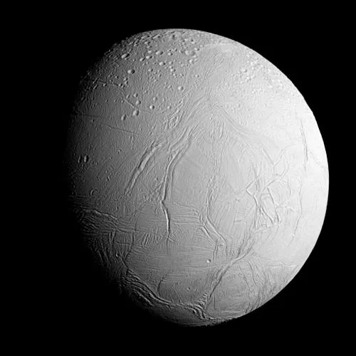

Encélado - Lua de Saturno

Introdução e História
Encélado é uma das luas mais intrigantes de Saturno, descoberta em 28 de agosto de 1789 pelo astrônomo britânico William Herschel, o mesmo que descobriu Urano. Durante décadas, a lua foi pouco mais que um ponto brilhante nos telescópios. No entanto, com a chegada da missão Cassini–Huygens, que passou perto de Saturno entre 2004 e 2017, descobrimos que Encélado não é apenas um corpo gelado comum — ele é um mundo ativo e dinâmico, com gêiseres que jorram água e partículas para o espaço e com sinais reveladores de um oceano subterrâneo com potencial para abrigar vida.
Características Físicas: Diâmetro, Massa e Órbita
Encélado tem cerca de 504 km de diâmetro, aproximadamente o tamanho do Estado do Arizona nos EUA, tornando‑o um dos menores satélites conhecidos com atividade geológica significativa.
A lua orbita Saturno a uma distância média de aproximadamente 238.000 km, completando uma volta ao redor do planeta em cerca de 32,9 horas.
Sua densidade média sugere que ele é composto principalmente de gelo de água com um núcleo rochoso, uma combinação que resulta em uma superfície extremamente fria (em torno de ‑201 °C) e altamente reflexiva — Encélado é um dos corpos com maior albedo do Sistema Solar, refletindo quase 90–100% da luz solar que atinge sua superfície.
Estrutura Interna e Atividade Geológica
Debaixo de sua camada superficial de gelo, Encélado abriga um oceano global de água líquida. As evidências desse oceano subterrâneo surgiram a partir de medições de gravidade e das plumas de água observadas perto do polo sul, que indicam que a camada de gelo não está solidamente conectada ao núcleo, mas sim separada por um reservatório líquido de água.
Regiões no polo sul apresentam fissuras conhecidas como “tiger stripes” — fendas longitudinais de onde jatos de água e partículas de gelo são expelidos continuamente para o espaço. Esses gêiseres podem atingir alturas de até centenas de quilômetros e são alimentados por um oceano aquecido por forças de maré causadas pela interação gravitacional com Saturno e com outras luas vizinhas.
Missões Espaciais
Encélado tem sido alvo de grande interesse científico, principalmente após a chegada da sonda Cassini–Huygens à órbita de Saturno em 2004. Cassini realizou múltiplos sobrevoos da lua, coletando dados valiosos sobre sua geologia, composição e atividade de gêiseres.
- Jatos de água e partículas de gelo expelidos pelas fissuras do polo sul;
- Presença de moléculas orgânicas e sais na pluma, indicando um oceano subterrâneo rico em química;
- Medidas de gravidade que sugerem um oceano global de água líquida sob a crosta de gelo;
- Informações sobre a interação do oceano com o núcleo rochoso, fornecendo energia química potencial.
Missões futuras, ainda em estudo, podem incluir sondas que sobrevoem Encélado mais de perto ou que coletem amostras diretamente da pluma, a fim de buscar sinais mais claros de atividade biológica.
Esses estudos têm como objetivo compreender melhor o potencial de habitabilidade da lua e sua capacidade de sustentar formas de vida simples.
Atmosfera e Exosfera
Encélado não possui uma atmosfera espessa como a Terra ou Titã, mas sim uma exosfera fina composta principalmente de vapor de água, com pequenas quantidades de nitrogênio, dióxido de carbono e metano detectadas nos jatos.
Essa fina camada gasosa é constantemente reabastecida pelos próprios gêiseres, já que a gravidade fraca de Encélado é incapaz de reter gases por longos períodos.
Potencial de Habitabilidade
- Água Líquida: A existência de um oceano global sob a crosta de gelo é um dos achados mais significativos da Cassini. Esse oceano fornece um ambiente onde a água pode existir em estado líquido, mesmo a temperaturas extremamente baixas na superfície.
- Fonte de Energia: A interação entre o núcleo rochoso e a água líquida produz energia química e térmica. O estiramento e compressão causados pela gravidade de Saturno criam calor no interior de Encélado — um processo chamado aquecimento por maré — que impede o oceano de congelar completamente e pode fornecer energia para reações químicas complexas.
- Ingredientes Químicos: As plumas de Encélado contêm compostos orgânicos básicos e precursores de moléculas importantes para a vida, como blocos de aminoácidos, além de sais e outros elementos que indicam um ambiente químico rico, semelhante aos ambientes hidrotermais da Terra onde a vida prospera.
Embora até hoje não tenham sido detectados sinais diretos de organismos vivos, a combinação de água líquida, energia e química favorável coloca Encélado como um candidato muito forte para estudos futuros de astrobiologia.
Curiosidades
Encélado é tão reflexivo que suas camadas geladas brilham intensamente sob a luz solar, fazendo com que seja um dos objetos mais brilhantes do Sistema Solar.
Os jatos de água e partículas que emanam de sua superfície formam grande parte do anel E de Saturno, um dos anéis menos densos e mais dispersos do planeta.
As moléculas orgânicas e sais encontrados no jato sugerem que o oceano tem químicos essenciais que, em teorias terrestres, poderiam sustentar vida microbiana.
Origem do Nome
Encélado recebeu seu nome na mitologia grega, inspirado em um dos gigantes da guerra entre deuses e titãs. Na tradição, Encélado era um gigante aprisionado sob o Monte Etna, na Sicília, e seus movimentos causavam terremotos e erupções vulcânicas. A escolha desse nome reflete a natureza geologicamente ativa da lua, com seus gêiseres e atividades internas, lembrando o gigante adormecido que ainda se movimenta sob a crosta da Terra.
Referências
- NASA. Encélado: Moon of Saturn. Disponível em: https://science.nasa.gov/saturn/moons/enceladus/. Acesso em: 24 dez. 2025.
- NASA. Cassini finds global ocean in Saturn's moon Enceladus. Disponível em: https://www.nasa.gov/news-release/cassini-finds-global-ocean-in-saturns-moon-enceladus/. Acesso em: 24 dez. 2025.
- NASA. NASA Cassini data reveals building blocks for life in Enceladus ocean. Disponível em: https://www.nasa.gov/missions/cassini/nasa-cassini-data-reveals-building-block-for-life-in-enceladus-ocean/. Acesso em: 24 dez. 2025.